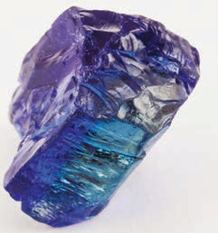
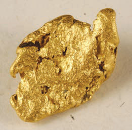
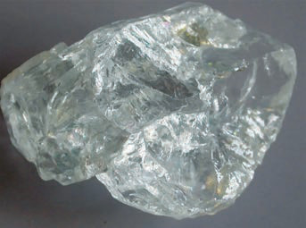

Minerals
Tanzania has many mineral resources, including gold, tanzanite, diamonds, coal, copper, salt, tin, nickel, uranium, and other precious stones. It is one of Africa’s top producers of gold, with substantial gold reserves spread over several regions. Tanzanite is a precious mineral found only in Tanzania. The mining sector in Tanzania is essential to the country’s economy because it attracts foreign investment and generates revenue through export of minerals. Figure 1 represent some of the minerals found in Tanzania.



Land
Tanzania is rich in land resources, including fertile land and large grazing areas. Tanzania has fertile soil suitable for cultivating various crops like coffee, tea, tobacco, maize, beans, sunflowers, paddy and other crops. The country also has large tracts of land for raising animals like cattle, sheep, and goats. Some areas in Tanzania are designated as wildlife parks and reserves, protecting plants, animals, and other living organisms. Other land is used for human settlements, industries, and businesses. Thus, land is an essential resource that contributes to Tanzania’s economic growth and the well-being of communities and improves the lives of individuals.
Water
Water is an essential resource for all living things, including humans, animals and plants. Tanzania has many water resources found in different areas, sources, and regions of the country, including dams, rivers, lakes, the ocean and groundwater. Water resources contribute to the country’s economy and people’s daily lives. The Indian Ocean, Lake Victoria, Lake Tanganyika, and Lake Nyasa are some of the significant water bodies. There are also rivers, including Rufiji, Ruvuma, Malagarasi, Ruvu, Wami, Kagera and Pangani, and large dams like Julius Nyerere Hydropower, Mtera, Nyumba ya Mungu and Kidatu. People and other living organisms use water to sustain their lives.